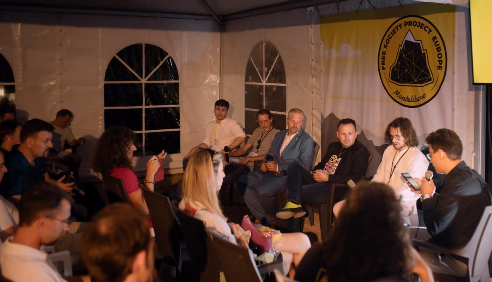
MTL Fest
Apoyo a los gastos organizativos y a los ponentes.
Aceptamos donaciones y otorgamos subvenciones para proyectos: desarrollo de infraestructura, iniciativas educativas, eventos, conferencias, desarrollo, publicaciones y mucho más.
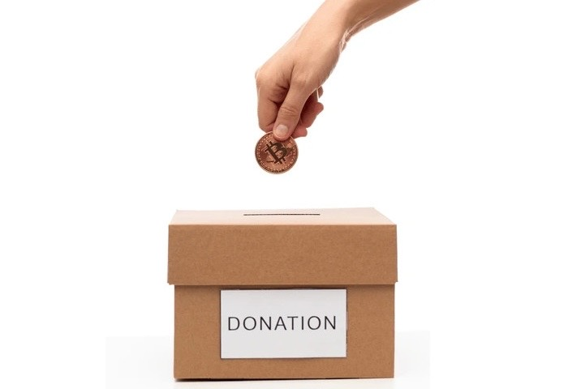
Apoyar y escalar iniciativas útiles para el movimiento Montelibero mediante donaciones voluntarias.
Las decisiones las toma el Consejo del TFM, que incluye a los mayores donantes. Los informes sobre subvenciones y donaciones se publican de forma abierta.
Criterios estrictos de selección, uso dirigido de los fondos, control de la ejecución.
Los donantes aportan fondos al fondo en una cuenta especial.
El Consejo examina las solicitudes y selecciona los proyectos.
Otorgamos subvenciones, publicamos informes y métricas.
El Consejo está compuesto por los mayores donantes del fondo. El número de miembros del Consejo está limitado a 10 personas. Las decisiones se toman de forma colegiada. La composición actual del Consejo y el Estatuto del TFM están disponibles públicamente.
Puede apoyar el fondo transfiriendo cualquier cantidad en EURMTL, USDM o SATSMTL a la cuenta de donaciones en la cadena de bloques Stellar.
Monedero custodio popular en forma de bot de Telegram.
Monederos Stellar en forma de aplicaciones.
Utilice cualquier monedero Stellar para transferir tokens a la dirección del TFM.
GCSAXEHZBQY65URLO6YYDOCTRLIGTNMGCQHVW2RZPFNPTEJN6VN7TFIN
Haga clic en la dirección para copiarla

Apoyo a los gastos organizativos y a los ponentes.
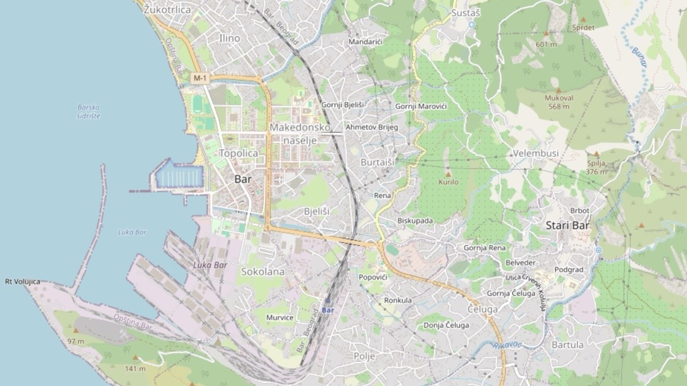
Desarrollo de mapas y datos abiertos para la ciudad de Bar.
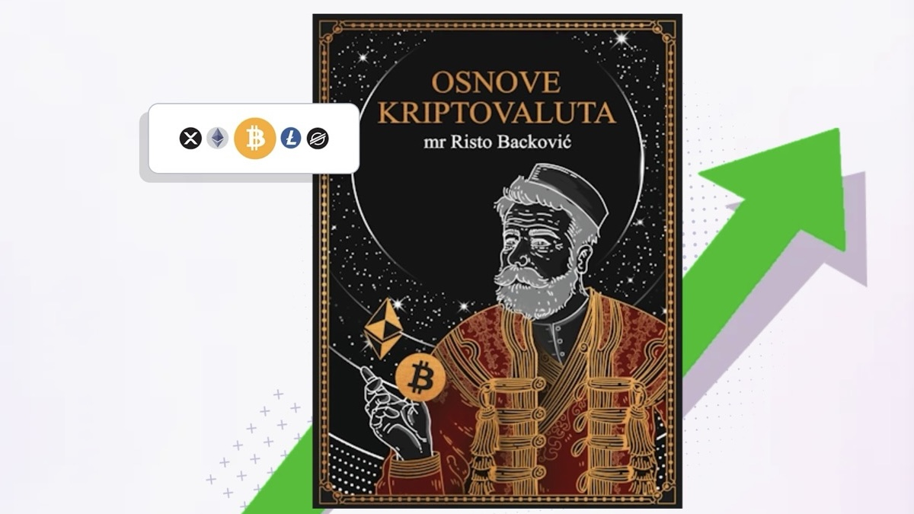
Patrocinio de la publicación del libro «Fundamentos de las criptomonedas» en idioma montenegrino.
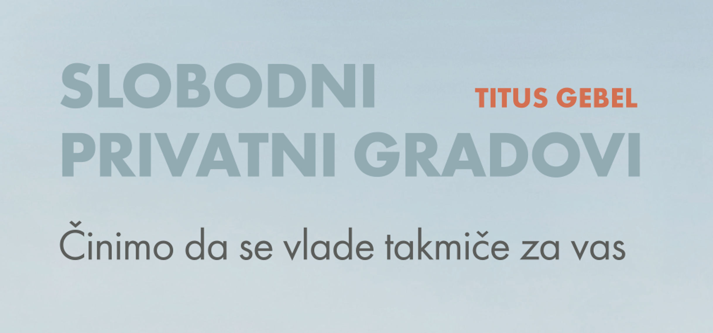
Traducción y impresión de la traducción montenegrina del libro "Free private cities" de Titus Gebel.
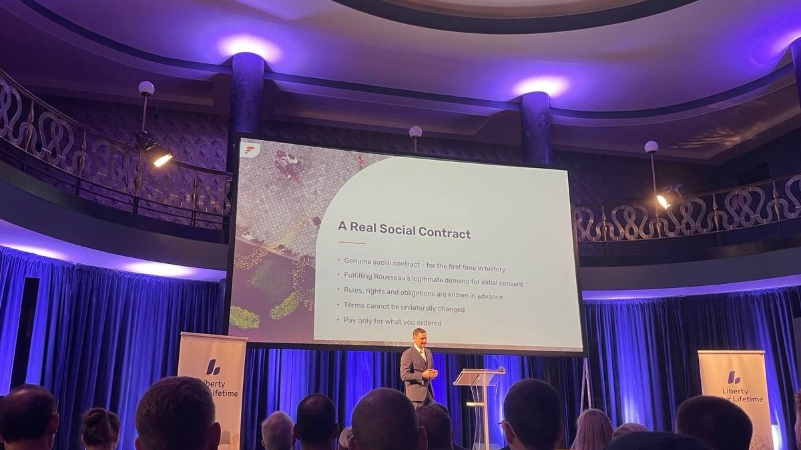
Pago de entradas para asistir al festival Liberty in Our Lifetime 2023 y 2024.
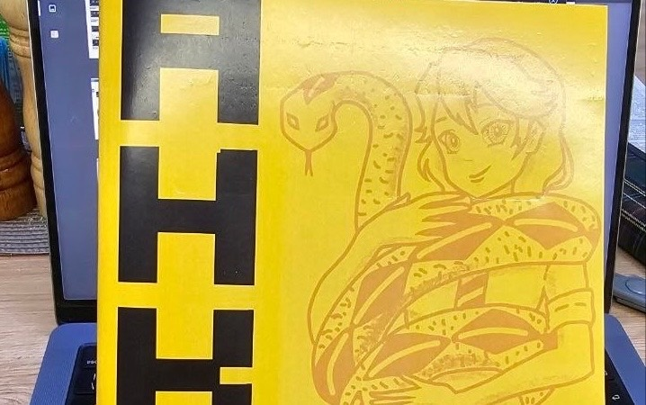
Préstamo sin interés para la impresión de la tirada del libro sobre Ancap.
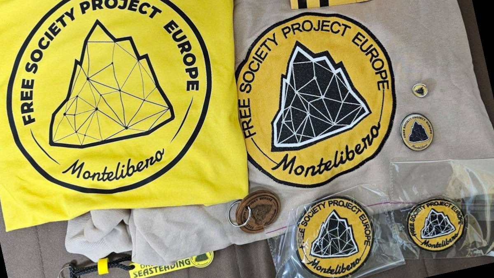
Préstamo sin interés para la producción de merchandising de Montelibero.
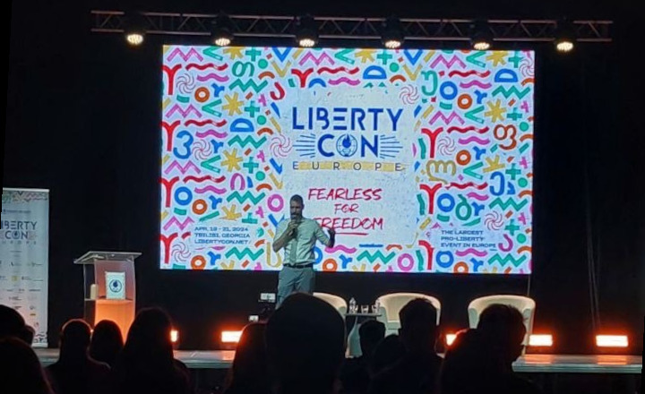
Apoyo al viaje de representantes a LibertyCon en Tbilisi.
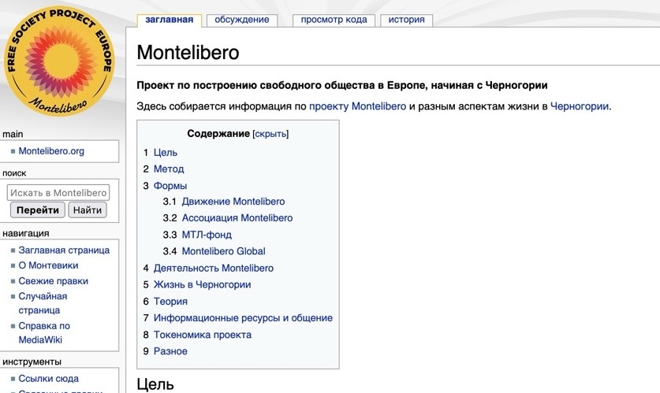
Pago del hosting de MonteWiki, donación de apoyo.
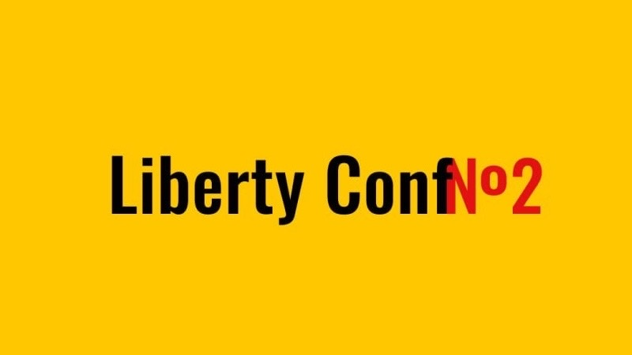
Patrocinio de la conferencia libertaria en Tbilisi II Liberty Conf.
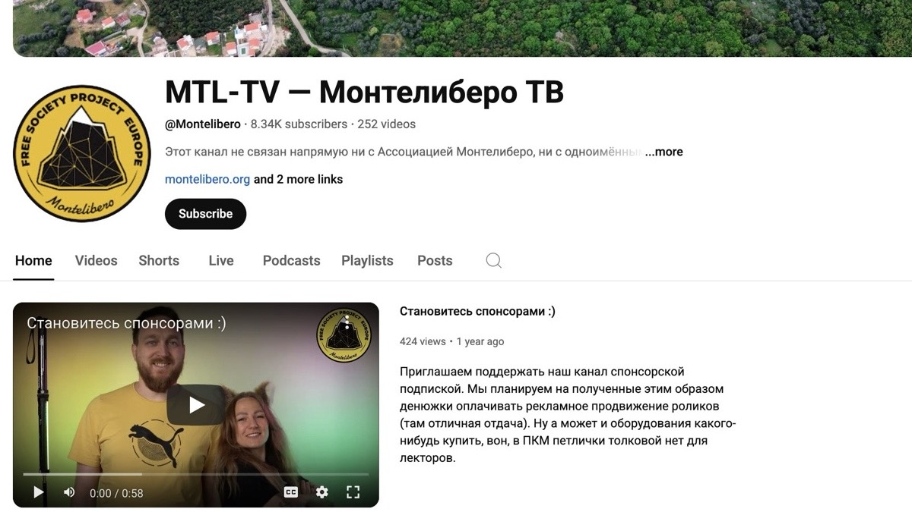
Donaciones para apoyar la actividad.